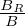
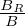

R + Z
R + Z Z. Using this, we obtain
Z. Using this, we obtain
In this section, all quantities are in the normalized form given in Sec. 1.1. For notational simplicity, the
overbars of the notation are ommitted. In cylindrical coordinates (R,ϕ,Z), the location vector is written
as X = RR + ZZ. Using this, we obtain
 | (40) |
Substituting this into Eq. (1) gives
 | (41) |
from which we obtain the following component equations:
![[ ]
dR B⋆ μ 1
dt-= B⋆v∥ + 2πBB-⋆B × ∇B + BB--⋆E× B ⋅ˆeR
∥ ∥ ∥](guiding_center_motion51x.png) | (42) |
|
| (43) |
![[ ]
dϕ- 1- B-⋆ ---μ--- --1-
dt = R B ⋆∥v∥ + 2πBB ∥⋆B × ∇B + BB ⋆∥E × B ⋅ˆeϕ,](guiding_center_motion53x.png) | (44) |
In the cylindrical coordinates, the terms ∇× b, b ⋅∇× b, and B ×∇B can be written, respectively, as

 | (46) |
 | (47) |
Using bR =  , bZ = , and bϕ =
, bZ = , and bϕ =  , we obtain
, we obtain
 | (48) |
The equation for v∥ is given by
 | (49) |
The first term on the left-hand-side of the above equation is written
|
| (50) |
|
| (51) |
 | (52) |
|
| (53) |